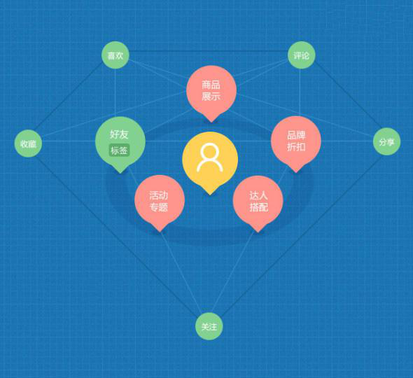

-
要说起电商很多人都是停留在传统的淘宝、京东上面，确实是传统电商对大家的影响还是比较深刻的，毕竟大家都熟知那么多年了，而且这些传统电商每年都花费大笔的广告费在做线下宣传。比如公交车车身、公交车站牌、路边广告牌等，线上线下都在砸钱博取大家的眼球给平台引流。所以大家对他们的认识还是比较深刻的!2018/11/2
-
四月，是社交电商风头最劲的一个月，拼多多、有赞、云集、礼物说等社交电商平台纷纷宣布融资，且融资金额全都过亿。如果说，前两年从兴起到没落的微商是一次预热，那么今年，真正的社交电商大战已经拉开了序幕。 近日，媒体或正面或负面的评论，一次又一次地将社交电商推到了风口浪尖。但不可否认的是，社交电商必将是下一个重要的零售增长点。2018/11/2
-

在社交和电商并无太多交集的年代。之前很多人认为，B2C 电商行业，淘宝和京东是两座跨不过的山。但是其实互联网电商并没有终局和边界，总有新的机会会出现。随着互联网的发展，社交电商将成为“消费升级”路上的必然形态。 无论是APP、微信小程序、网络平台，各种新兴电商企业通过社交渠道获得了丰厚的红利。2018/11/2
-
在社交和电商并无太多交集的年代。之前很多人认为，B2C 电商行业，淘宝和京东是两座跨不过的山。但是其实互联网电商并没有终局和边界，总有新的机会会出现。随着互联网的发展，社交电商将成为“消费升级”路上的必然形态。无论是APP、微信小程序、网络平台，各种新兴电商企业通过社交渠道获得了丰厚的红利。一时间，以社交裂变、精准营销为特色的社交电商潮流开始蔓延。2018/11/2
-
 要说起电商很多人都是停留在传统的淘宝、京东上面，确实是传统电商对大家的影响还是比较深刻的，毕竟大家都熟知那么多年了，而且这些传统电商每年都花费大笔的广告费在做线下宣传。比如公交车车身、公交车站牌、路边广告牌等，线上线下都在砸钱博取大家的眼球给平台引流。所以大家对他们的认识还是比较深刻的!2018/11/2
要说起电商很多人都是停留在传统的淘宝、京东上面，确实是传统电商对大家的影响还是比较深刻的，毕竟大家都熟知那么多年了，而且这些传统电商每年都花费大笔的广告费在做线下宣传。比如公交车车身、公交车站牌、路边广告牌等，线上线下都在砸钱博取大家的眼球给平台引流。所以大家对他们的认识还是比较深刻的!2018/11/2 -
 要说起电商很多人都是停留在传统的淘宝、京东上面，确实是传统电商对大家的影响还是比较深刻的，毕竟大家都熟知那么多年了，而且这些传统电商每年都花费大笔的广告费在做线下宣传。比如公交车车身、公交车站牌、路边广告牌等，线上线下都在砸钱博取大家的眼球给平台引流。所以大家对他们的认识还是比较深刻的!2018/11/2
要说起电商很多人都是停留在传统的淘宝、京东上面，确实是传统电商对大家的影响还是比较深刻的，毕竟大家都熟知那么多年了，而且这些传统电商每年都花费大笔的广告费在做线下宣传。比如公交车车身、公交车站牌、路边广告牌等，线上线下都在砸钱博取大家的眼球给平台引流。所以大家对他们的认识还是比较深刻的!2018/11/2


<
1
2
3
4
5
6
>